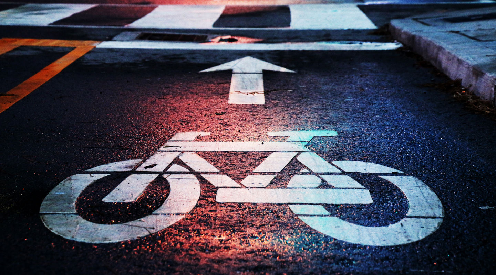

By Alexander Käßner, Jolanta Paliszewska, Caroline Zygmunt.
A cooperation between FH Potsdam and FixMyBerlin.

Bicyclists belong, as well as further vehicle drivers and pedestrians, equally to the daily traffic. Regardless of type, all traffic participants have the essential right for safety. However, according to the association “Changing Cities e.V.”, the condition of the bicycle infrastructure in Berlin is unsatisfactory. Therefore, it instigated the initiative „Volksentscheid Fahrrad” (translated: plebiscite bicycle) for a safe and convenient bicycle infrastructure in Berlin. Its success resulted in Germany’s very first official draft of the „Radgesetz” (translated: bike law) as part of the „Mobilitätsgesetz” (translated: mobility law) for Berlin in 2017. It aims to increase the bicycle traffic and to reduce the number of traffic deaths to zero with the „Vision Zero” component. To Implement the ideas of the bike law and to reach the targeted objectives it will require a major commitment from the city.
This website provides information about Berlin’s current cycle network, the cycling safety with feedback from citizens as well as future plans and ideas. At the end it will give you hints on how you can contribute to bring Berlin one step closer to become a cycle-friendly city.
At first sight, Berlin has quite a lot of bike lanes and cycle tracks. Most of the existing cycle tracks are structurally separated, e.g. by different cobblestones. However, there are still plenty of gaps in the cycle path network. For instance, huge parts of Neukölln and Mitte and are completely without bike paths. In fact, there is no district with a gapless system. In addition, it seems that especially the secondary roads of Berlin are disregarded
Accident consequences for involved traffic participants in Berlin 2016
The accident statistics clearly show that bicycling is a risky business in Berlin. Cyclists suffer from accidents by far the most of all traffic participants.
In 2016 almost all of the 17 fatal bicycle accidents happened in consequence of collisions with trucks or cars. Mainly because the bicyclist was overlooked while turning.
Besides all the accidents statistics, there are a lot of small and “almost” accidents which are not registered and therefore not countable.
But do bicyclists in Berlin actually also feel unsafe on the streets?
The German newspaper “Berliner Morgenpost” created a survey about it. Over 1800 readers of an article about bike security took part.
The survey shows that more than 60% feel unsafe riding their bike in Berlin. This result is alarming because subjective perceived safety is essential for improving the ride quality and for bringing more people to choose the bike over car. More bicyclists would relieve the whole traffic system.
Accident spots
In order to find critical spots, the city Berlin allowed the citizens to participate in an online dialog in 2013. More than 3300 people participated and identified over 5000 concrete places. The most named spots are marked on the map. The shown locations come along with a description of their particular problems within the bike infrastructure. Those problems can be applied to multiple places in the city.
As unsafe perceived spots
In order to find critical spots, the city Berlin allowed citizens to participate in an online dialog in 2013. More than 3300 people participated and identified over 5000 concrete places.
The most named spots are marked on the map. The shown locations come along with a description of their particular problems within the bike infrastructure. Those problems can be applied to multiple places in the city.
S Schönhauser Allee
Right-turning motorists can hardly see the bicyclists on the bike path behind the parking cars
The bike path is in a bad condition with obstacles like bollards
At the right traffic lane too many vehicles park illegally
S Brandenburger Tor
The marked left-turning lane is often full of parked cars which makes the left-turning more difficult for bicyclists
Bicyclists often do not get noticed by the approaching traffic turning left
Motorists and pedestrians do not expect traffic from the blocked street
U Rosa-Luxemburg-Platz
The street is too narrow for contraflow traffic and bicyclists
There are too many potholes
Dangerous hot spots exist due to poor visibility
Hermannplatz
There are many obstacles like parked bicycles which partly block the bike lane
The bike lane is serpentine and constricted, e.g. by signs
The ground marking of the bike lane is bad
Potsdamer Platz
Pedestrians walk on the bike lane
“Walk of the Stars” with red ground collides with the bike lane
Because of laid wires and many pedestrians the bike lane is not usable
bike path (all types)
subjective hot spots
accident (size = number)
Bicycle parking safety
Another aspect of safety is the bicycle parking safety. The diagram below shows the number of recorded bicycle thefts in Berlin which is at a high level and increased continuously in the recent years. In addition, it is clearly noticeable that the solved cases are very minor in relation to the recorded cases. Bicycle thefts happen especially in areas of big parking places like next to train stations, schools or shopping malls.
There are already concepts to advise e.g. public administrations and transportation companies about creating sufficient and safe bicycle parking areas. Until 2025 it is planned to create 50.000 bicycle parking facilities at bus stops / train stations and further 50.000 in public space, especially at social / cultural buildings and schools. Those facilities include safe bicycle boxes, covered bicycle parks and service stations.
There are lockable bicycle parking box, but there are only a few locations, yet. A parking box with 10 doors around. You can book your „Bicycle-hotel“ with velo-easy app to pay 50 cent for 1 hour.
In Bernau there is the first bicycle parking garage in the region.
What is the city planning?
The data visualizations above show that there is urgent need for action. Especially the problematic and even partly not existing cycle paths are a risky matter for cyclists.
Therefore, the city has huge plans to improve those bad conditions. The “Radgesetz” (bike law) includes the construction of a gapless bicycle network system with e.g. bicycle highways, distance routes, broad cycle paths on main roads and side roads consisting of bicycle boulevards (as far as possible). The bicycle network system is planned to be finished by the year 2030.
Planned paths
General bike paths
From year 2018 to 2020 60 new bike paths, cycle lanes and further improvements of the bicycle infrastructure are planned for all districts in Berlin. Especially Treptow-Köpenick, Charlottenburg-Wilmersdorf and Lichtenberg will have meaningful improvements.
Cycle highways
The politicians agreed that 100 kilometers of cycle highways will be built to improve the connection between the suburbs and the city center. They are supposed to be broad enough, safe and preferably without crossroads. The senate submitted a list of eight cycle highways routes.
The numbers match the order of the feasibility analysis dates.
Bike boulevards with forbidden motorized transit are planned for the future. To make them more noticeable they will be marked along with a green line, the areas at crossroads will be marked red.
One focal long-term goal of the bike law are protected bike lanes to increase both the factual as well as subjective perceived traffic safety. Protected bike lanes are very new in Germany but exist in many countries worldwide already (e.g. USA, Spain, France). They are built on the street and are separated from the moving traffic, for instance by bollards or flower tubs.
Berlin will be the first municipality in Germany which is introducing the protected bike lanes. The implementation of its construction is planned to start this year (2018).
Besides certain plans that are expected to be implemented in the near future, there is also a visionary concept for Berlin: The „Radbahn“.
The concept aims to realize the best bike path worldwide in the centre of Berlin. It wants to transform the broadly unused space under and along the elevated viaduct of the metro U1 into a vibrant urban space with 9 kilometers of comfortable roofed bike path attached with many social, innovative and recreation spaces.
The concept of “Radbahn” is carefully thought out and feasible. The next step is to convince the politicians of Berlin. You can help to turn the vision into reality!
You are unhappy the bicycle situation in Berlin and you don’t feel comfortable cycling through the city? Then of course, you can contribute for further changes. There are a lot of ways for you to help making Berlin a cycle-friendly city. The following chosen websites can show you how:
FixMyBerlin
…to input data and make it useful to the city planning and to improve the communication between the administration and citizens.